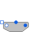

SMPM_VoltageSourceTest example: PermanentMagnetSynchronousInductionMachine fed by FOC |
|
Diagram
{kind=link}
Information
This information is part of the Modelica Standard Library maintained by the Modelica Association.
A synchronous induction machine with permanent magnets accelerates a quadratic speed dependent load from standstill. The rms values of d- and q-current in rotor fixed coordinate system are controlled by the voltageController, and the output voltages fed to the machine. The result shows that the torque is influenced by the q-current, whereas the stator voltage is influenced by the d-current.
Default machine parameters are used.
Parameters (5)
| Idq |
Value: {-53.5, 84.6} Type: Current[2] (A) Description: Desired d- and q-current |
|---|---|
| wNominal |
Value: 2 * pi * smpmData.fsNominal / smpmData.p Type: AngularVelocity (rad/s) Description: Nominal speed |
| TLoad |
Value: 181.4 Type: Torque (N·m) Description: Nominal load torque |
| JLoad |
Value: 0.29 Type: Inertia (kg·m²) Description: Load's moment of inertia |
| smpmData |
Value: Type: SM_PermanentMagnetData |
Components (20)
| smpm |
Type: SM_PermanentMagnet |
|
|---|---|---|
| signalVoltage |
Type: SignalVoltage |
|
| star |
Type: Star |
|
| ground |
Type: Ground |
|
| iq |
Type: Constant |
|
| id |
Type: Constant |
|
|  | terminalBox |
Type: TerminalBox |
| angleSensor |
Type: AngleSensor |
|
| inertiaLoad |
Type: Inertia |
|
| quadraticSpeedDependentTorque | ||
| currentSensor |
Type: CurrentSensor |
|
| voltageController |
Type: VoltageController |
|
| torqueSensor |
Type: TorqueSensor |
|
| speedSensor |
Type: SpeedSensor |
|
| rotorDisplacementAngle |
Type: RotorDisplacementAngle |
|
| groundM |
Type: Ground |
|
| starM |
Type: Star |
|
| voltageQuasiRMSSensor |
Type: VoltageQuasiRMSSensor |
|
| smpmData |
Type: SM_PermanentMagnetData |
|
| currentQuasiRMSSensor |
Type: CurrentQuasiRMSSensor |